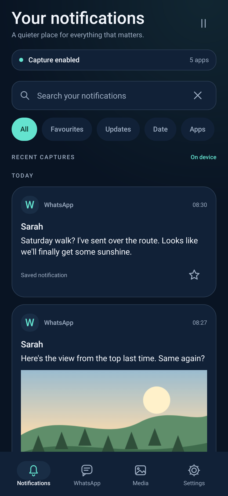
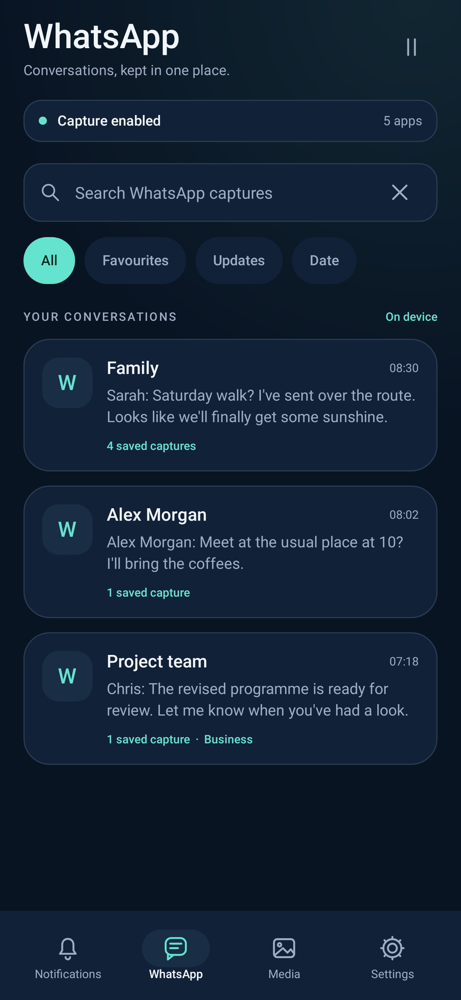
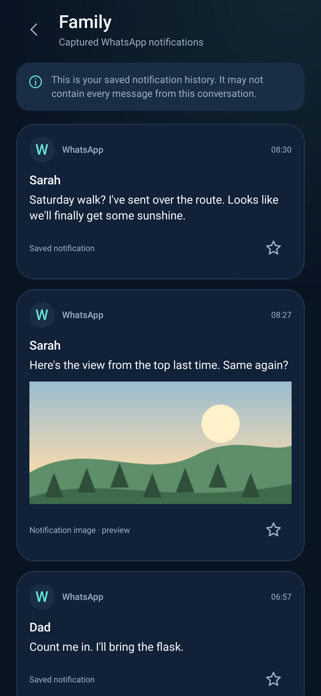
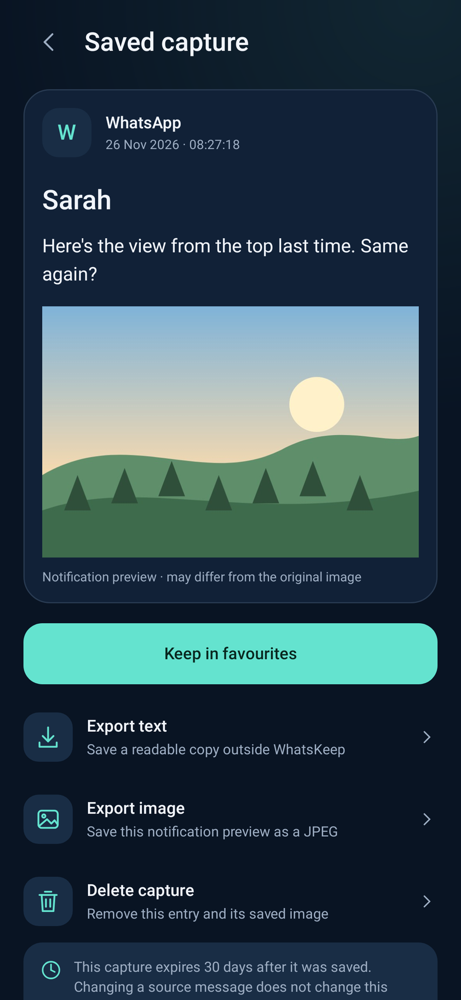
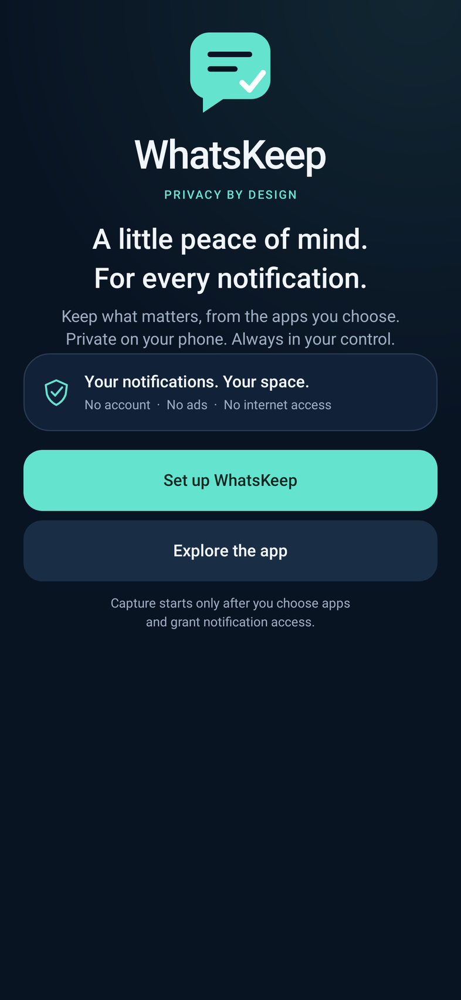
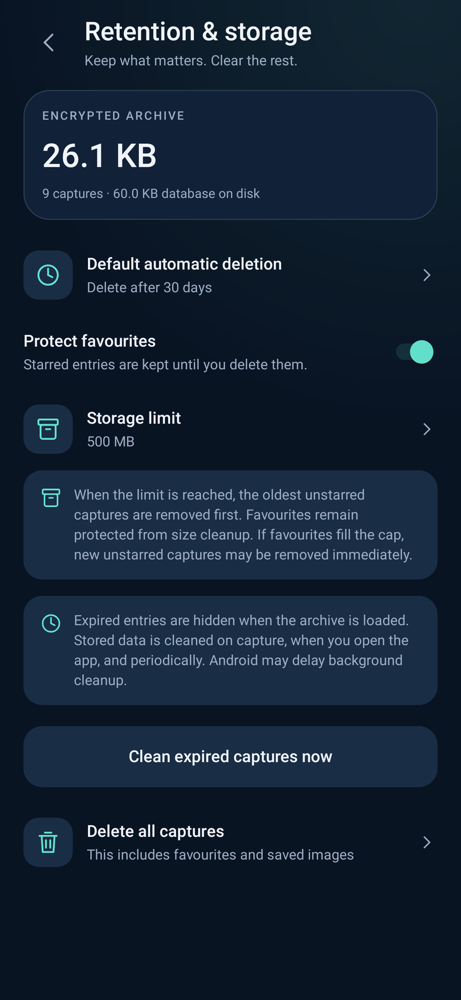
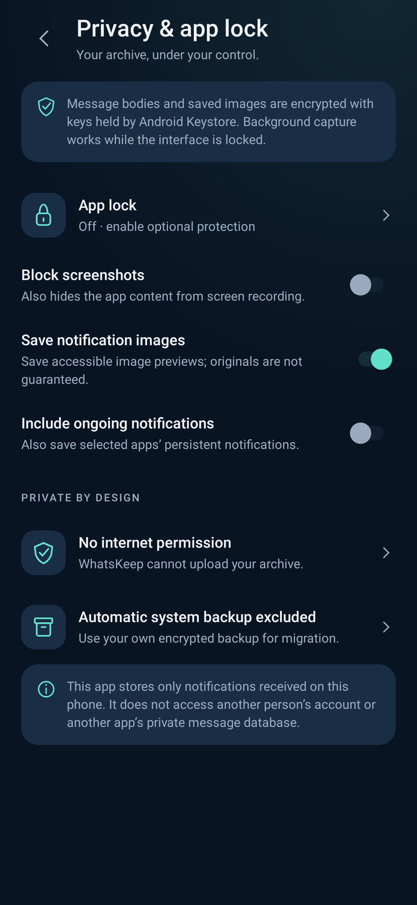
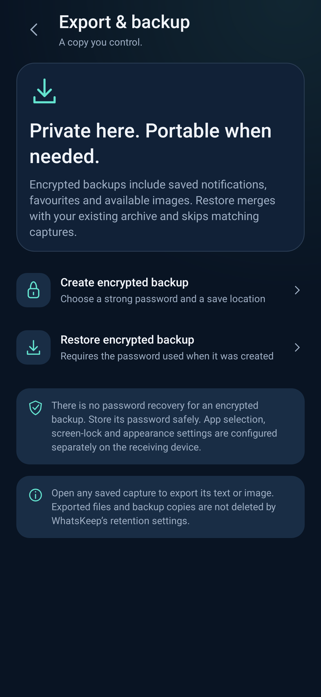
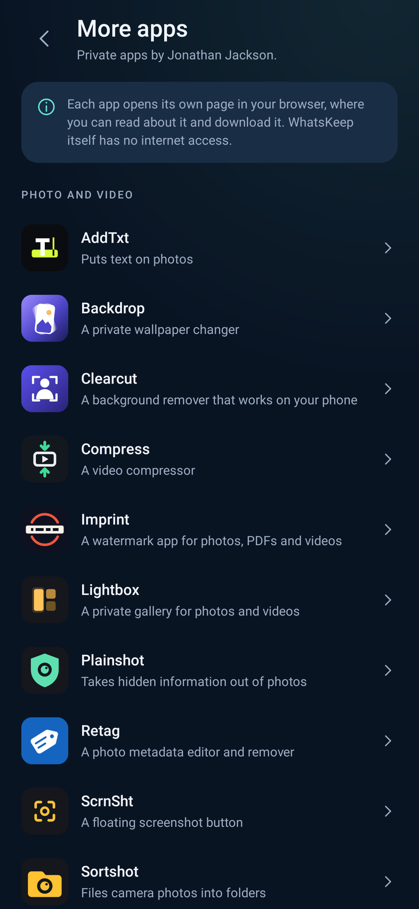
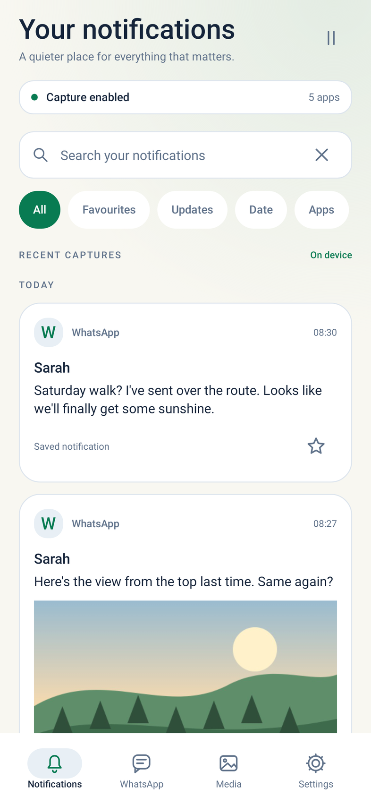

Keep the notifications that matter.
WhatsKeep quietly saves the notifications from the apps you pick, as they arrive: WhatsApp messages, emails, texts, delivery updates and anything else. If a message is deleted, or you swipe a notification away, your copy is still there, with its picture where one was shown.
Everything stays on your phone, encrypted. WhatsKeep has no internet permission at all, so nothing you save can leave the phone unless you export it yourself. Old captures delete themselves after the time you choose.
WhatsKeep saves messages that other people send. What the law says
- Version 1.0.1
- Android 10 or later
- 459 KB
Free, with nothing to unlock. No adverts, no account with the developer, no tracking. Compare or read the release notes.
Chrome may say the file might be harmful. It shows this for app files that do not come from Google Play. Choose Download anyway.

- No internetThe app has no permission to go online.
- EncryptedMessages and pictures locked with AES-256 on the phone.
- No advertsNone in the app and none on this site.
- Clears itselfCaptures delete after 30 days, or the time you choose.
A look inside
These are the real screens, drawn from the app's own code with made-up messages. Swipe or scroll sideways to see them all.









How it works
WhatsKeep uses Android's notification access, the same permission smart watches and car systems use to show your messages.
Choose your apps
Pick WhatsApp, WhatsApp Business, or any other app. Nothing from any other app is ever saved.
Allow notification access
Android asks once. From then on, each new notification from your chosen apps is saved the moment it arrives.
Read it any time
Open WhatsKeep to read, search and filter what was saved, even if the message was deleted or the notification cleared.
Everything is in, and all of it is free
Nothing below is held back for a paid tier, because there is no paid tier.
Saving
- The apps you choose
- Only notifications from apps you tick are saved. Everything else is ignored.
- Whole messages
- Long and grouped messages are saved in full when the app puts them in the notification, not just the first line.
- Pictures
- Picture previews shown in notifications are saved too, up to 960 pixels across.
- Daily hours
- Save each app only between set times, overnight too. A Quick Settings tile pauses saving in one tap.
Reading
- Three tabs
- Every notification, WhatsApp conversations, and saved pictures, each with its own search.
- Search and filters
- Search every word, sender and app. Filter by favourites, app, date and changed messages.
- Changes kept
- When a notification changes, the earlier text is kept and the new one is marked as an update.
- Export
- Save any message as a text file or its picture as a JPEG, wherever you choose.
Keeping it tidy
- Deletes itself
- Captures delete after 30 days by default. Change it for everything or for each app, from one day to never.
- Favourites kept
- Star a capture and it stays until you delete it.
- Size limit
- Keep the archive under 500 MB, or the size you choose. The oldest unstarred captures go first.
- Delete any time
- Delete one capture, or everything, in a couple of taps.
Private
- No internet permission
- WhatsKeep cannot go online, so it cannot send anything anywhere.
- Encrypted on the phone
- Messages, names and pictures are locked with AES-256, with the key held in Android's secure key store.
- App lock
- Open WhatsKeep with your fingerprint or screen lock. Saving carries on while it is locked.
- Encrypted backup
- Move your archive to a new phone in one file protected by your own password.
Private by design
Nothing leaves the phone
WhatsKeep has no internet permission. There are no servers, no account, no adverts and no analytics.
Encrypted at rest
Saved messages and pictures are encrypted with a key kept in Android's Keystore. Android's cloud backup is switched off for WhatsKeep.
Only what you choose
Only notifications from the apps you tick are saved, and only from the moment you switch it on. Nothing is read from other apps' storage.
Use it within the law
WhatsKeep is for keeping notifications on your own phone. Putting it on someone else's phone to read their messages, or using what you save to track, threaten or embarrass someone, can be a crime.
- Computer Misuse Act 1990. Installing WhatsKeep on a phone that is not yours, or switching on its notification access, without the owner's permission can be unauthorised access to a computer under section 1, and unauthorised acts under section 3.
- Investigatory Powers Act 2016. Secretly capturing another person's messages as they are sent to their phone, without lawful authority, can be unlawful interception under section 3.
- Protection from Harassment Act 1997. Using saved messages to monitor, follow or pressure someone can be harassment or stalking.
- UK GDPR and the Data Protection Act 2018. Messages contain other people's personal data. Keeping them for your own personal use is fine; sharing or publishing them, or using them for work or business, brings data protection duties.
Laws differ in other countries. If you are not in the UK, the rules where you are apply. Read the terms of use.
Installing and updating
WhatsKeep is not on Google Play, so your phone asks a couple of extra questions the first time.
Download the app file
Tap Download on your phone. The file is called WhatsKeep.apk and is about 459 KB. If Chrome says the file might be harmful, choose Download anyway. First tick the box to say you will use the app within the law.
Allow the install
Open the file. The first time, Android asks you to allow your browser to install apps. Allow it, go back and tap Install. If Google Play Protect steps in, choose More details, then Install anyway.
Updating later
WhatsKeep never goes online, so it cannot check for updates itself. Settings, Check for updates opens the release notes in your browser: install the new file over the old one and everything you have saved is kept.
Version 1.0.1, released 26 November 2026. See the release notes, or check your download.
Questions
Is WhatsKeep really free?
Yes. There is no paid version, no subscription and no adverts.
Is it on Google Play?
No. WhatsKeep is a personal project and is downloaded from this site as an Android app file. It needs Android 10 or later.
Can it show messages that were deleted?
Yes, if WhatsKeep saved the notification before the message was deleted. Your copy stays until you delete it or it reaches the time you chose. It cannot bring back anything that arrived before you set it up, or anything that never showed as a notification.
Why are some messages missing?
A message is only saved if a notification arrives. If you have the chat open, or the chat is muted, there may be no notification. Some apps also shorten or hide what they put in the notification.
Does it save pictures, videos and voice notes?
It saves the picture preview when the notification shows one. Videos, voice notes, view-once media and full-size originals are not in notifications, so they cannot be saved.
Do I need to log in to WhatsApp?
No. WhatsKeep only reads notifications on your phone. It never logs in to WhatsApp or any other app and never reads their storage.
Android says the setting is restricted
Android can block notification access for apps installed from a file. Open Settings, Apps, WhatsKeep, tap the three dots and choose Allow restricted settings, then allow notification access again.
Will the sender know?
No. WhatsKeep saves the notification your phone already received. Opening WhatsKeep does not open the chat.
How do I move it to a new phone?
In Settings, Export and encrypted backup, save a backup with a password you choose, then restore it in WhatsKeep on the new phone. The password cannot be recovered, so keep it safe.
Is WhatsKeep part of WhatsApp?
No. WhatsKeep is an independent app. It is not made, approved or supported by WhatsApp or Meta.
Does it work on an iPhone?
No. iPhones do not let apps read notifications, so WhatsKeep is for Android only.
Who made it?
WhatsKeep is made by Jonathan Jackson, an independent developer in the United Kingdom.
Never lose a message again
Free, with no adverts and nothing to unlock. Made by the developer of several other free Android apps: see them all.